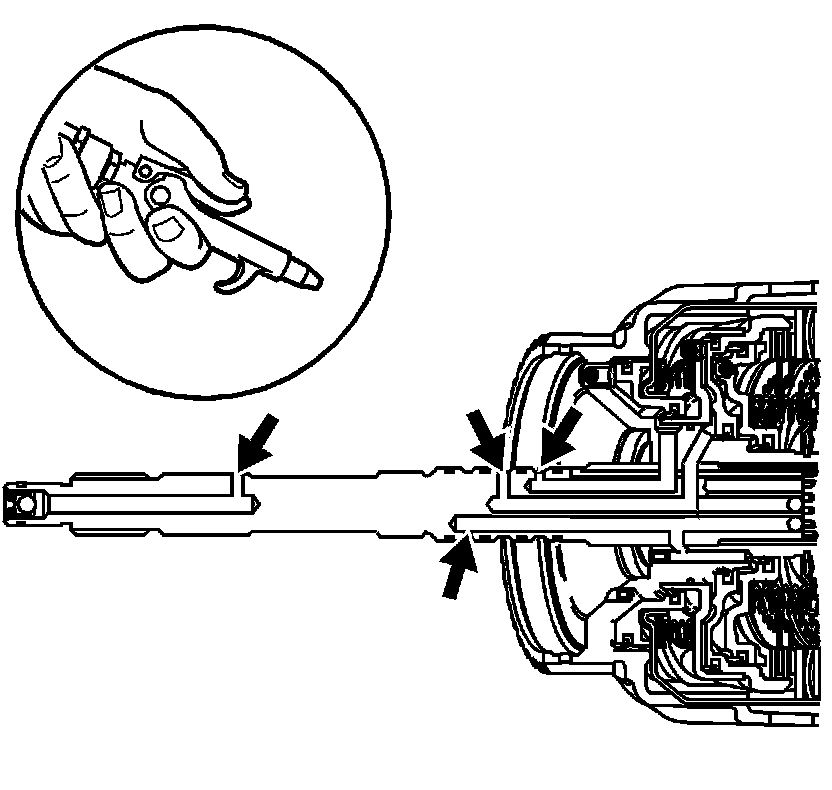

Input Housing and Shaft Assembly Inspection
Input Housing and Shaft Assembly Inspection
1. Inspect the input housing and shaft assembly for the following conditions:
^ Porosity
^ Spline wear - internal and external
^ Input speed sensor models, rotor teeth for cracks or damage
^ Three turbine shaft ball check valves are present and move freely
^ Retainer and ball check valve assembly (620)
^ Orificed cup plug (698)
^ Lube hole cracks
2. Test the input housing for cracks by tapping housing with wooden handle. Housing should produce a sharp ring.
3. Inspect the turbine shaft oil seal ring (619) grooves for damage or burrs. The oil seal rings (619) must fit loose into the ring grooves.

4. Inspect the oil feed passages for obstructions.
5. Apply compressed air into the passages indicated.